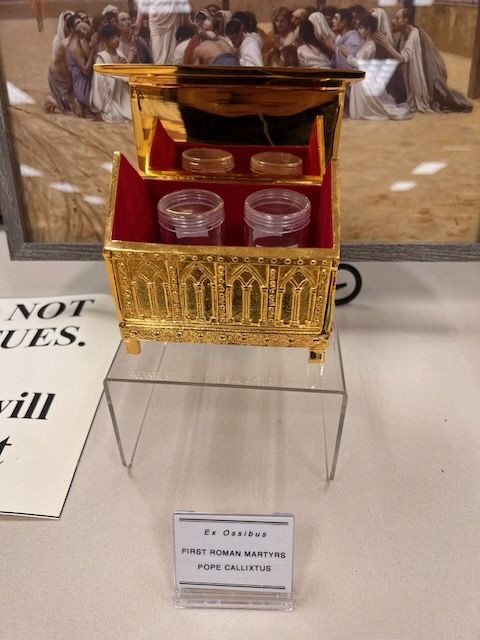

The label is in more than one language
First Roman Martyrs and Pope Callixtus, from the bones
On the label
Ex OssibusFIRST ROMAN MARTYRSPOPE CALLIXTUS
In English
From the bones: the First Roman Martyrs; Pope Callixtus.
Saints named
The open gold chest with four jars of bone fragments. The jar labels are read in IMG_0818.